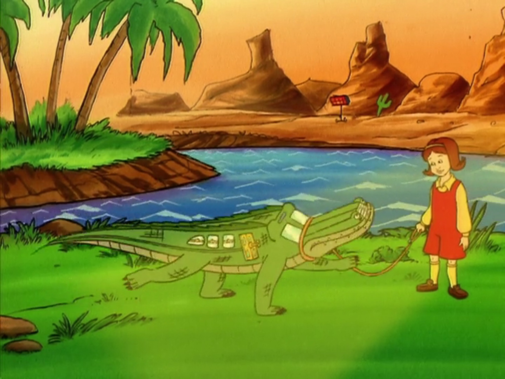

Welcome to The Magic School Bus!
Step into the world of imagination and discovery with The Magic School Bus , the beloved 1990s TV series that took children on thrilling educational journeys. It was created by Joanna Coleand illustrated by Bruce Degen . This iconic show transformed the mundane into the extraordinary, one magical field trip at a time.The Magic School Bus follows Ms. Valerie Frizzle, a quirky and enthusiastic science teacher, and her class of adventurous students as they embark on educational escapades. They do all of this aboard their shape-shifting, talking school bus. Whether it's diving into the human body, exploring outer space, or delving into the depths of the ocean, Ms. Frizzle and her students make learning an exciting and unforgettable experience.
Main Characters
- Ms. Valerie Frizzle: The spirited and eccentric teacher who believes in hands-on learning and encourages her students to explore the wonders of science with enthusiasm and curiosity.
- Arnold Perlstein: The cautious and often nervous student who occasionally finds himself reluctantly involved in the class’s adventurous escapades.
- Ralphie Tennelli: Known for his enthusiasm and sense of humor, Ralphie adds a fun and lively spirit to the group.
- Wanda Li: The smart and resourceful student who is always eager to learn and help her friends.
- Carlos Ramon: The tech-savvy student who often comes up with innovative solutions during the group’s adventures.
The Educational Impact and Legacy
The Magic School Bus was not just entertainment—it was a tool for learning. Each episode was meticulously crafted to teach scientific concepts and foster a love for discovery. The show tackled a wide range of topics, from biology and chemistry to physics and environmental science, making complex subjects accessible and engaging for children.With its unique blend of humor, creativity, and educational content, The Magic School Bus left a lasting impact on its audience. It inspired a generation of curious minds and paved the way for future educational programming. The series has since expanded into books, spin-offs, and even a reboot, continuing to captivate new audiences with the magic of learning.
